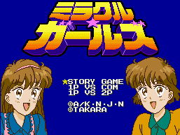

Miracle Girls - SNES Games

- Company: Takara
- Price (in yen): 8800
- Genre: Platform game
Controls
- A button: Jump
- B button: Throw Candy
- X button: [not used]
- Y button: [not used]
- L button: [not used]
- R button: [not used]
- Start: Pause
- Select: [not used]
From Lasse Reinikainen:
Instead of killing enemies, you throw candy at them. They eat the candy and are
stunned while they chew it. If you are looking for an overly cute game, this is the one to pick up. At certain parts, your
sister will tell you the color of the platform you must jump onto. If you jump onto the wrong platform, you lose a life.
Anime Video Game Resource Center © 1998 by Luis A. Cruz